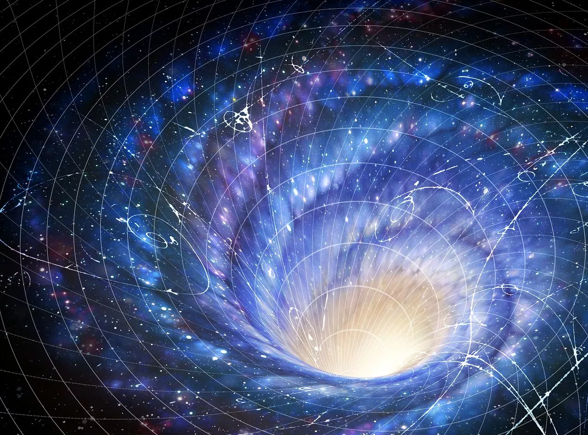

ORIGEM: COLAPSO DE ESTRELA MASSIVA
O Abismo
Buracos negros são restos de estrelas massivas que colapsaram sob sua própria gravidade. No centro, existe a singularidade, onde as leis da física como conhecemos deixam de funcionar.

Onde a gravidade conquista a luz e o espaço-tempo revela seus maiores mistérios.
ORIGEM: COLAPSO DE ESTRELA MASSIVA
Buracos negros são restos de estrelas massivas que colapsaram sob sua própria gravidade. No centro, existe a singularidade, onde as leis da física como conhecemos deixam de funcionar.
Além desta fronteira, nem mesmo a luz consegue escapar.
Superfície onde a gravidade se torna intensa a ponto de aprisionar a luz.
O raio de Schwarzschild determina o limite para um corpo se tornar um buraco negro.
Região onde fótons podem orbitar o buraco negro antes de cair.
HIPÓTESE TEÓRICA
Buracos de minhoca são atalhos teóricos no espaço-tempo, conectando regiões distantes do universo — ou até dimensões diferentes.
Algumas teorias sugerem que podem ligar um buraco negro a um buraco branco.
